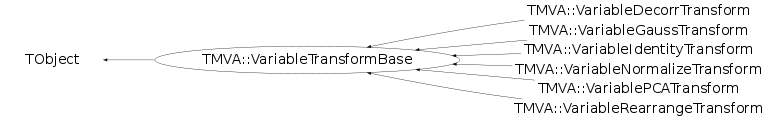

class TMVA::VariableTransformBase: public TObject
Function Members (Methods)
This is an abstract class, constructors will not be documented.
Look at the header to check for available constructors.
public:
| virtual | ~VariableTransformBase() |
| void | TObject::AbstractMethod(const char* method) const |
| virtual void | TObject::AppendPad(Option_t* option = "") |
| virtual void | AttachXMLTo(void* parent) |
| virtual void | TObject::Browse(TBrowser* b) |
| static TClass* | Class() |
| virtual const char* | TObject::ClassName() const |
| virtual void | TObject::Clear(Option_t* = "") |
| virtual TObject* | TObject::Clone(const char* newname = "") const |
| virtual Int_t | TObject::Compare(const TObject* obj) const |
| virtual void | TObject::Copy(TObject& object) const |
| virtual void | CountVariableTypes(UInt_t& nvars, UInt_t& ntgts, UInt_t& nspcts) const |
| virtual void | TObject::Delete(Option_t* option = "")MENU |
| virtual Int_t | TObject::DistancetoPrimitive(Int_t px, Int_t py) |
| virtual void | TObject::Draw(Option_t* option = "") |
| virtual void | TObject::DrawClass() constMENU |
| virtual TObject* | TObject::DrawClone(Option_t* option = "") constMENU |
| virtual void | TObject::Dump() constMENU |
| virtual void | TObject::Error(const char* method, const char* msgfmt) const |
| virtual void | TObject::Execute(const char* method, const char* params, Int_t* error = 0) |
| virtual void | TObject::Execute(TMethod* method, TObjArray* params, Int_t* error = 0) |
| virtual void | TObject::ExecuteEvent(Int_t event, Int_t px, Int_t py) |
| virtual void | TObject::Fatal(const char* method, const char* msgfmt) const |
| virtual TObject* | TObject::FindObject(const char* name) const |
| virtual TObject* | TObject::FindObject(const TObject* obj) const |
| virtual Option_t* | TObject::GetDrawOption() const |
| static Long_t | TObject::GetDtorOnly() |
| virtual const char* | TObject::GetIconName() const |
| virtual Bool_t | GetInput(const TMVA::Event* event, vector<Float_t>& input, vector<Char_t>& mask, Bool_t backTransform = kFALSE) const |
| virtual const char* | GetName() const |
| virtual char* | TObject::GetObjectInfo(Int_t px, Int_t py) const |
| static Bool_t | TObject::GetObjectStat() |
| virtual Option_t* | TObject::GetOption() const |
| TString | GetShortName() const |
| virtual const char* | TObject::GetTitle() const |
| virtual vector<TString>* | GetTransformationStrings(Int_t cls) const |
| virtual UInt_t | TObject::GetUniqueID() const |
| TMVA::Types::EVariableTransform | GetVariableTransform() const |
| virtual Bool_t | TObject::HandleTimer(TTimer* timer) |
| virtual ULong_t | TObject::Hash() const |
| virtual void | TObject::Info(const char* method, const char* msgfmt) const |
| virtual Bool_t | TObject::InheritsFrom(const char* classname) const |
| virtual Bool_t | TObject::InheritsFrom(const TClass* cl) const |
| virtual void | Initialize() |
| virtual void | TObject::Inspect() constMENU |
| virtual const TMVA::Event* | InverseTransform(const TMVA::Event *const, Int_t cls) const |
| void | TObject::InvertBit(UInt_t f) |
| virtual TClass* | IsA() const |
| Bool_t | IsCreated() const |
| Bool_t | IsEnabled() const |
| virtual Bool_t | TObject::IsEqual(const TObject* obj) const |
| virtual Bool_t | TObject::IsFolder() const |
| Bool_t | IsNormalised() const |
| Bool_t | TObject::IsOnHeap() const |
| virtual Bool_t | TObject::IsSortable() const |
| Bool_t | TObject::IsZombie() const |
| TMVA::MsgLogger& | Log() const |
| virtual void | TObject::ls(Option_t* option = "") const |
| virtual void | MakeFunction(ostream& fout, const TString& fncName, Int_t part, UInt_t trCounter, Int_t cls) |
| void | TObject::MayNotUse(const char* method) const |
| virtual Bool_t | TObject::Notify() |
| void | TObject::Obsolete(const char* method, const char* asOfVers, const char* removedFromVers) const |
| static void | TObject::operator delete(void* ptr) |
| static void | TObject::operator delete(void* ptr, void* vp) |
| static void | TObject::operator delete[](void* ptr) |
| static void | TObject::operator delete[](void* ptr, void* vp) |
| void* | TObject::operator new(size_t sz) |
| void* | TObject::operator new(size_t sz, void* vp) |
| void* | TObject::operator new[](size_t sz) |
| void* | TObject::operator new[](size_t sz, void* vp) |
| TObject& | TObject::operator=(const TObject& rhs) |
| virtual void | TObject::Paint(Option_t* option = "") |
| virtual void | TObject::Pop() |
| virtual Bool_t | PrepareTransformation(const vector<TMVA::Event*,allocator<TMVA::Event*> >&) |
| virtual void | TObject::Print(Option_t* option = "") const |
| virtual void | PrintTransformation(ostream&) |
| virtual Int_t | TObject::Read(const char* name) |
| virtual void | ReadFromXML(void* trfnode) |
| virtual void | ReadTransformationFromStream(istream& istr, const TString& classname = "") |
| virtual void | TObject::RecursiveRemove(TObject* obj) |
| void | TObject::ResetBit(UInt_t f) |
| virtual void | TObject::SaveAs(const char* filename = "", Option_t* option = "") constMENU |
| virtual void | TObject::SavePrimitive(ostream& out, Option_t* option = "") |
| virtual void | SelectInput(const TString& inputVariables, Bool_t putIntoVariables = kFALSE) |
| void | TObject::SetBit(UInt_t f) |
| void | TObject::SetBit(UInt_t f, Bool_t set) |
| virtual void | TObject::SetDrawOption(Option_t* option = "")MENU |
| static void | TObject::SetDtorOnly(void* obj) |
| void | SetEnabled(Bool_t e) |
| void | SetNormalise(Bool_t n) |
| static void | TObject::SetObjectStat(Bool_t stat) |
| virtual void | SetOutput(TMVA::Event* event, vector<Float_t>& output, vector<Char_t>& mask, const TMVA::Event* oldEvent = 0, Bool_t backTransform = kFALSE) const |
| void | SetOutputDataSetInfo(TMVA::DataSetInfo* outputDsi) |
| void | SetTMVAVersion(TMVA::TMVAVersion_t v) |
| virtual void | TObject::SetUniqueID(UInt_t uid) |
| void | SetUseSignalTransform(Bool_t e = kTRUE) |
| virtual void | ShowMembers(TMemberInspector& insp) |
| const vector<TMVA::VariableInfo>& | Spectators() const |
| virtual void | Streamer(TBuffer& b) |
| void | StreamerNVirtual(TBuffer& b) |
| virtual void | TObject::SysError(const char* method, const char* msgfmt) const |
| const vector<TMVA::VariableInfo>& | Targets() const |
| Bool_t | TObject::TestBit(UInt_t f) const |
| Int_t | TObject::TestBits(UInt_t f) const |
| void | ToggleInputSortOrder(Bool_t sortOrder) |
| virtual const TMVA::Event* | Transform(const TMVA::Event *const, Int_t cls) const |
| virtual void | TObject::UseCurrentStyle() |
| Bool_t | UseSignalTransform() const |
| const vector<TMVA::VariableInfo>& | Variables() const |
| virtual void | TObject::Warning(const char* method, const char* msgfmt) const |
| virtual Int_t | TObject::Write(const char* name = 0, Int_t option = 0, Int_t bufsize = 0) |
| virtual Int_t | TObject::Write(const char* name = 0, Int_t option = 0, Int_t bufsize = 0) const |
| virtual void | WriteTransformationToStream(ostream& o) const |
protected:
| void | CalcNorm(const vector<TMVA::Event*,allocator<TMVA::Event*> >&) |
| virtual void | TObject::DoError(int level, const char* location, const char* fmt, va_list va) const |
| Int_t | GetNClasses() const |
| UInt_t | GetNSpectators() const |
| UInt_t | GetNTargets() const |
| UInt_t | GetNVariables() const |
| void | TObject::MakeZombie() |
| void | SetCreated(Bool_t c = kTRUE) |
| void | SetName(const TString& c) |
| void | SetNVariables(UInt_t i) |
| vector<TMVA::VariableInfo>& | Spectators() |
| vector<TMVA::VariableInfo>& | Targets() |
| vector<TMVA::VariableInfo>& | Variables() |
private:
| void | UpdateNorm(Int_t ivar, Double_t x) |
Data Members
public:
| enum TObject::EStatusBits { | kCanDelete | |
| kMustCleanup | ||
| kObjInCanvas | ||
| kIsReferenced | ||
| kHasUUID | ||
| kCannotPick | ||
| kNoContextMenu | ||
| kInvalidObject | ||
| }; | ||
| enum TObject::[unnamed] { | kIsOnHeap | |
| kNotDeleted | ||
| kZombie | ||
| kBitMask | ||
| kSingleKey | ||
| kOverwrite | ||
| kWriteDelete | ||
| }; |
protected:
| TMVA::Event* | fBackTransformedEvent | holds the current back-transformed event |
| TMVA::DataSetInfo& | fDsi | |
| TMVA::DataSetInfo* | fDsiOutput | |
| TMVA::VariableTransformBase::VectorOfCharAndInt | fGet | get variables/targets/spectators |
| TMVA::MsgLogger* | fLogger | ! message logger |
| TMVA::VariableTransformBase::VectorOfCharAndInt | fPut | put variables/targets/spectators |
| TMVA::TMVAVersion_t | fTMVAVersion | |
| TMVA::Event* | fTransformedEvent | holds the current transformed event |
private:
| Bool_t | fCreated | has been created |
| Bool_t | fEnabled | has been enabled |
| UInt_t | fNSpectators | number of spectators to be transformed |
| UInt_t | fNTargets | number of targets to be transformed |
| UInt_t | fNVariables | number of variables to be transformed |
| UInt_t | fNVars | number of variables |
| Bool_t | fNormalise | normalise input variables |
| Bool_t | fSortGet | if true, sort the variables into the order as defined by the user at the var definition |
| vector<TMVA::VariableInfo> | fSpectators | event spectators [saved to weight file --> TODO ] |
| vector<TMVA::VariableInfo> | fTargets | event targets [saved to weight file --> TODO ] |
| TString | fTransformName | name of transformation |
| Bool_t | fUseSignalTransform | true if transformation bases on signal data |
| TMVA::Types::EVariableTransform | fVariableTransform | Decorrelation, PCA, etc. |
| Bool_t | fVariableTypesAreCounted | true if variable types have been counted already |
| vector<TMVA::VariableInfo> | fVariables | event variables [saved to weight file] |
Class Charts
{kind=link}
{kind=link}
{kind=link}
{kind=link}

Function documentation
void SelectInput(const TString& inputVariables, Bool_t putIntoVariables = kFALSE)
select the variables/targets/spectators which serve as input to the transformation
Bool_t GetInput(const TMVA::Event* event, vector<Float_t>& input, vector<Char_t>& mask, Bool_t backTransform = kFALSE) const
select the values from the event
void SetOutput(TMVA::Event* event, vector<Float_t>& output, vector<Char_t>& mask, const TMVA::Event* oldEvent = 0, Bool_t backTransform = kFALSE) const
select the values from the event
void CountVariableTypes(UInt_t& nvars, UInt_t& ntgts, UInt_t& nspcts) const
count variables, targets and spectators
void CalcNorm(const vector<TMVA::Event*,allocator<TMVA::Event*> >& )
TODO --> adapt to variable,target,spectator selection method to calculate minimum, maximum, mean, and RMS for all variables used in the MVA
std::vector<TString>* GetTransformationStrings(Int_t cls) const
TODO --> adapt to variable,target,spectator selection default transformation output --> only indicate that transformation occurred
void UpdateNorm(Int_t ivar, Double_t x)
TODO --> adapt to variable,target,spectator selection update min and max of a given variable (target) and a given transformation method
void AttachXMLTo(void* parent)
create XML description the transformation (write out info of selected variables)
void MakeFunction(ostream& fout, const TString& fncName, Int_t part, UInt_t trCounter, Int_t cls)
getinput and setoutput equivalent
void Initialize()
const Event* InverseTransform(const TMVA::Event *const , Int_t cls) const
void WriteTransformationToStream(ostream& o) const
void ReadTransformationFromStream(istream& istr, const TString& classname = "")